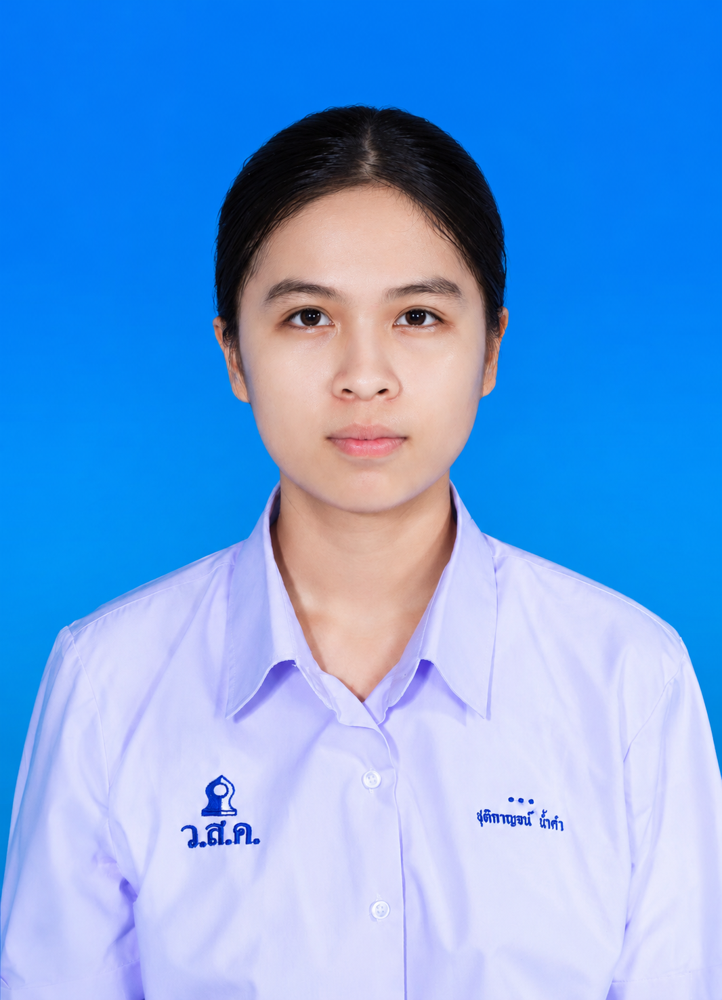
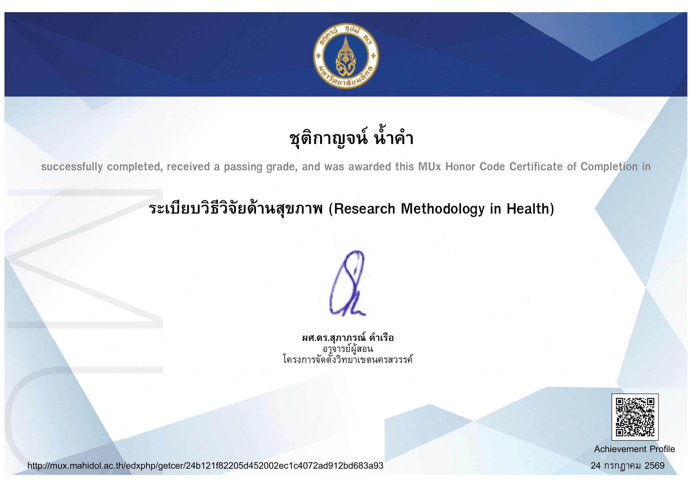

เรียงความแสดงเจตจำนงในการศึกษาต่อ
ดิฉัน นางสาวชุติกาญจน์ น้ำคำ เป็นผู้ที่มีความสนใจในศาสตร์ทางวิทยาศาสตร์มาโดยตลอด เนื่องจากดิฉันเป็นคนที่ชอบตั้งคำถามและเกิดความสงสัยกับสิ่งต่าง ๆ รอบตัวอยู่เสมอ ไม่ว่าจะเป็นปรากฏการณ์ทางธรรมชาติ การทำงานของสิ่งมีชีวิต หรือเหตุการณ์ต่าง ๆ ที่เกิดขึ้นในชีวิตประจำวัน เมื่อเกิดข้อสงสัย ดิฉันมักพยายามค้นคว้าข้อมูล ศึกษาเพิ่มเติม และทดลองด้วยตนเองเท่าที่สามารถทำได้ เพื่อให้เข้าใจถึงสาเหตุและกระบวนการที่แท้จริงว่าเหตุใดสิ่งนั้นจึงเกิดขึ้น ความรู้สึกที่ได้ค้นพบคำตอบด้วยตนเองทำให้ดิฉันเห็นเสน่ห์ของวิทยาศาสตร์ และเป็นแรงผลักดันให้ดิฉันสนใจศึกษาด้านนี้อย่างจริงจัง
ตลอดระยะเวลาที่ศึกษาในระดับมัธยมศึกษา ดิฉันให้ความสำคัญกับการเรียนและพัฒนาตนเองอย่างสม่ำเสมอ โดยเฉพาะในรายวิชาวิทยาศาสตร์และคณิตศาสตร์ ดิฉันเชื่อว่าการเรียนรู้ที่ดีไม่ได้เกิดจากการจดจำเพียงอย่างเดียว แต่เกิดจากความเข้าใจในหลักการและเหตุผลเบื้องหลังของสิ่งต่าง ๆ ดังนั้น ดิฉันจึงพยายามศึกษาด้วยความตั้งใจ คิดวิเคราะห์ และเชื่อมโยงความรู้ในแต่ละเรื่องเข้าด้วยกันอยู่เสมอ แม้ว่าดิฉันจะยังไม่มีผลงานหรือรางวัลที่โดดเด่น แต่ดิฉันเชื่อว่าความมุ่งมั่น ความรับผิดชอบ และความกระตือรือร้นในการเรียนรู้เป็นคุณลักษณะที่สะท้อนตัวตนของดิฉันได้เป็นอย่างดี
คณะวิทยาศาสตร์ มหาวิทยาลัยมหิดล เป็นคณะที่ดิฉันใฝ่ฝันที่จะเข้าศึกษา เนื่องจากเป็นสถาบันที่มีความเป็นเลิศทางด้านวิทยาศาสตร์ มีการส่งเสริมการเรียนรู้ผ่านการคิดวิเคราะห์ การค้นคว้า และการวิจัย ซึ่งสอดคล้องกับแนวทางการเรียนรู้ที่ดิฉันให้ความสำคัญ ดิฉันเชื่อว่าสภาพแวดล้อมทางวิชาการของคณะจะช่วยให้ดิฉันได้พัฒนาความรู้ ความสามารถ และศักยภาพของตนเองอย่างเต็มที่ พร้อมทั้งเปิดโอกาสให้ได้เรียนรู้จากผู้เชี่ยวชาญและประสบการณ์ที่หลากหลาย
ในอนาคต ดิฉันตั้งใจที่จะนำความรู้ทางวิทยาศาสตร์ไปต่อยอดในการศึกษาระดับที่สูงขึ้น และนำความรู้ที่ได้รับไปใช้ให้เกิดประโยชน์ต่อสังคม ไม่ว่าจะในด้านการศึกษา การวิจัย หรือการพัฒนานวัตกรรมที่สามารถช่วยแก้ไขปัญหาและยกระดับคุณภาพชีวิตของผู้คนได้
ด้วยเหตุผลดังกล่าว ดิฉันจึงมีความมุ่งมั่นและตั้งใจอย่างยิ่งที่จะศึกษาต่อในคณะวิทยาศาสตร์ มหาวิทยาลัยมหิดล และพร้อมที่จะพัฒนาตนเองอย่างเต็มความสามารถ เพื่อก้าวสู่การเป็นบุคลากรที่มีคุณภาพและสามารถสร้างประโยชน์ให้แก่สังคมในอนาคต
เกียรติบัตรและการเข้าร่วมอบรมผ่านระบบ MUX มหาวิทยาลัยมหิดล

มหาวิทยาลัยมหิดล (โครงการจัดตั้งวิทยาเขตนครสวรรค์)
เรียนรู้อะไร: เรียนรู้กระบวนการและขั้นตอนการทำวิจัยทางวิทยาศาสตร์อย่างเป็นระบบ การเก็บและวิเคราะห์ข้อมูลอย่างมีหลักการ
นำไปต่อยอด: ใช้เป็นพื้นฐานในการทำโครงงานวิทยาศาสตร์ระดับมหาวิทยาลัย และการอ่านบทความวิชาการ (Research Paper) เพื่อพัฒนาการคิดเชิงวิเคราะห์
-1.png)
มหาวิทยาลัยมหิดล (สถาบันแห่งชาติเพื่อการพัฒนาเด็กและครอบครัว)
เรียนรู้อะไร: บทบาทของ AI และเทคโนโลยีที่มีผลต่อสุขภาวะ รวมถึงแนวทางการใช้เทคโนโลยีอย่างชาญฉลาดและปลอดภัย
นำไปต่อยอด: นำเทคโนโลยี AI มาช่วยเพิ่มประสิทธิภาพในการเรียน ค้นคว้าข้อมูลอย่างมีจริยธรรม และต่อยอดสู่นวัตกรรมดิจิทัลเพื่อสุขภาพ
-1.png)
มหาวิทยาลัยมหิดล (วิทยาลัยวิทยาศาสตร์และเทคโนโลยีการกีฬา)
เรียนรู้อะไร: หลักสรีรวิทยาพื้นฐาน การเคลื่อนไหวร่างกาย การฝึกสมาธิ และการดูแลสุขภาพกายและจิตใจ
นำไปต่อยอด: นำมาใช้จัดการความเครียด เพิ่มความพร้อมในการเรียน และเป็นความรู้พื้นฐานเชื่อมโยงกับวิชาวิทยาศาสตร์ชีวภาพ
ช่องทางการติดต่อและติดตามผลงาน
Location: สมุทรสาคร, ประเทศไทย